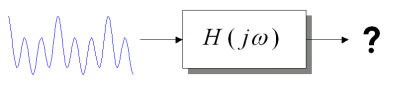

Figure 1: LTI
system
Continuous-time systems transform one continuous time signal to another using some transformation. If this transformation is linear and time-invariant, the system is said to be Linear Time Invariant (LTI). This leads to a general relation between the input and output of an LTI continuous-time system, called the convolution integral.
We often are interested in the response of LTI systems to real signals like a cosine signal. In general, the frequency response function is a very efficient way to characterize an LTI system for sinusoidal inputs. A LTI system with sinusoidal input of some specified frequency is shown in the figure. The output from the system is also sinusoid with same frequency, but a different amplitude and phase component from the input. The transformation was caused by the frequency response of the system.
Figure 2: Low-pass
filter
Consider the system above which is a lowpass filter, which multiplies the sinusoids at low frequencies by approximately one and at high frequencies by approximately zero. The frequency response of the system are as shown below. Since, frequencies of continuous time signals can be in the range -inf to +inf, only a part of the frequency axis is shown.
Figure 3: Magnitude and Phase angle plots of Frequency response
In this case the input sinusoid has a magnitude of 1 and frequency of 50Hz.The filter has a normalized amplitude of 0.707 at this frequency. So, the output signal also has a frequency of 50Hz, but a magnitude 0.707. Similarly, the phase plot shows that the phase corresponding to this frequency is -pi/4 and hence the output signal has a phase shift of pi/4.

Figure 4: LTI system
with superposed input signals
Because LTI systems are linear by definition, the principle of superposition allows us to extend the above simple case to more complicated input signals, which are composed of many sinusoids. If the frequency response of continuous time system is known, then each component is processed separately and their responses are added together. A graphical depiction of this is shown in the figure.
Figure 5: LTI system with superposition
applied at input and output of the system
The plots above are roughly to scale and plotted on the same range. The frequencies of the input components from top to bottom are 25, 50 and 75Hz. The signal at the top has an amplitude twice that of the second input and the third signal has four times the second signal. The magnitude and phase of the output signals in each case differs, depending on their frequency. From the response of the system to the combined inputs, it can be seen that the output signal almost matches the input signal in shape and has the same frequency as the combined signal.
Having demonstrated the filtering of an arbitrary harmonic input signal, the process of finding the output of an LTI system using the frequency response can be summarized as follows:
This explanation is incomplete without the Theory In Equations given below. Please ensure you read this section as we establish a relationship between impulse response and the frequency response, and mathematically work an example of filtering using frequency response.
As shown in the Theory in Words section, we often are interested in the response of a system to one or more real sinusoidal signals. But, on the other hand, in order to derive the Frequency response of systems, it is much easier if we use complex exponentials. They can be easily manipulated and are much easier to handle during multiplication operations. So, we will use them in deriving our results in this section. However, these results can be used to handle real sinusoidal signals, as, real sinusoidal signals can be represented as combination of complex exponentials. Using "inverse Euler" formula a cosine signal can be represented as,
If we are able to derive a relation between the input and output of a system with the exponential terms as the input, then we can use superposition to derive the complete system output. This can be done by summing the outputs corresponding to the respective complex exponential signals, as linearity holds good for the LTI system. Now, we will consider a single exponential as input to the system and derive equations for the frequency response and system output.
If the input to a continuous time LTI system is a complex exponential signal of the form shown in Eq.1a, then the corresponding output signal is another complex signal of the same frequency as shown in Eq.1b. The output y(t) is obtained from the input x(t) by performing a convolution operation as shown in the equations below.
From, the final step in Eq.1b, the output is related to the input by multiplication by the function H(jw). H(jw) is the Frequency Response of the system. For each value of frequency the function produces a complex amplitude, which is then multiplied by the input signal to give the output of the system.This results in the amplitude being scaled by some factor and the phase being shifted. The original frequency of the input is thus preserved and only its complex amplitude is affected. The magnitude and phase of the output from a continuous LTI system at a particular input signal frequency w0 is shown in the equations below.
A similar relation for the output, with the 2nd term in Eq.1 as input to the system can be obtained. Then this results can be combined to yield the desired response of the system, to a real cosine signal of the form shown in Eq.1 .
Let us now, derive the frequency response for a system with a impulse response as shown in Eq.3a and then determine the output for a sinusoidal input signal at a specific frequency. This is the case for which the plots are shown in the Theory In Words section above. The frequency scale in the plots is in analog frequency f in Hz. Note, that though these plots have both the positive and negative frequency ranges, the CLTIDEMO tool shows the positive frequency range only. This is because, for systems with real impulse response,|H(jw)| = |H(-jw)|, and therefore we do not explicitly plot the negative frequencies.
First, lets look at the frequency response of a system with impulse response of the form shown in Eq.3a.
Then using a value of a = 100p, the magnitude and phase response are as shown in the equations below and plot as shown in Figure 3 above.
For a complex sinusoid of frequency w= 100p (f=50Hz), the output is given as shown in the equation below.
The frequency response discussed in this example corresponds to a class of continuous time filter called Low-pass filter. For this filter f=50Hz or w=100p is taken to be the nominal dividing point between the low frequency passband and high frequency stopband . Note, that the magnitude of the output signal at this frequency is 0.707 times the input magnitude.
You can verify this result using the specified input and frequency characteristics, in the CLTIDEMO tool. The above example establishes the final equation for sinusoidal LTI systems; generalizing it to include a DC (zero-frequency) component of magnitude A0 gives the following:
| FREQUENCY RESPONSE OF A SINUSOIDAL SIGNAL: |  |
Does it all make sense to you? If you are not sure go over it one more time before moving on with the rest of the tutorial.
If you still do not get it, let us know what is confusing you. We want to make this tutorial understandable and any feedback is appreciated!